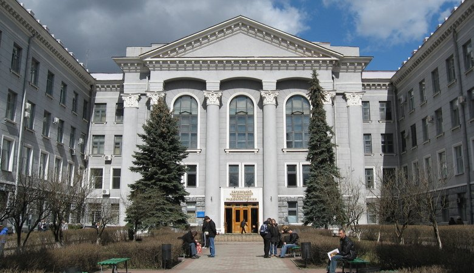

Оформлений текст
Загальна кількість перестановок з n
елементів дорівнює добутку всіх
цілих чисел від 1 до n:
Pn= 1• 2•
3•…•(n-2)•(n-1)•n.
Список визначень з дисциплінами 3го курсу
- IntT:
- Internet технології — це технології створення і підтримки різних інформаційних ресурсів в комп'ютерній мережі Інтернет: сайтів, блогів, форумів, чатів, електронних бібліотек та енциклопедій.
- ПУ:
- Психологія управління — надасть студенту навички спільної діяльності та співробітництва. Навички ефективного спілкування. Уміння використовувати знання про психологічні закони управління, стилі керівництва, теорії мотивації персоналу та психологічні особливості прийняття рішень в практиці управління.
- СПЗ:
- Системне програмне забезпечення — вивчення принципів та системи команд операційної системи Linux, Windows та ін.; засвоєння базових понять, методів та засобів керування процесами і потоками.
- МодС:
- Моделювання систем — вивчення основних підходів і принципів побудови моделей та придбання навичок застосування їх для розв'язання задач моделювання, що виникають при розробці чи дослідженні комп’ютерних інформаційних й інших систем.
- АК:
- Архітектура комп'ютерів — галузь комп’ютерної інженерії, яка досліджує функціонал актуальних для користувача властивостей апаратно-програмного комплексу персонального комп’ютера.
- КСх:
- Комп’ютерна схемотехніка — науково-технічна дисципліна, яка вивчає теоретичні методи аналізу і синтезу схем комп'ютерів (електронних обчислювальних машин) і засоби їхньої технічної реалізації.
- ФПр:
- Функціональне програмування — Предметом вивчення навчальної дисципліни є загальні принципи функціонального програмування, базові термінологія та навички програмування на функціональних мовах програмування, класичні задачі та алгоритми їх розв’язання із використанням функціонального підходу у програмуванні, оволодіння технологією розробки програм на мові програмування Haskell.
- ФВтС:
- Фізичне виховання та спорт — вивчає основи теорії і практики фізичної культури як науково-практичної бази для набуття професійних навичок, що забезпечують збереження і зміцнення здоров'я та психофізичну готовність до майбутньої професії.
Фрагмент таблиці періодичної системи хімічних елементів
| Періоди | Групи елементів | |||||||
|---|---|---|---|---|---|---|---|---|
| I | II | III | IV | V | VI | VII | VIII | |
| 1 |
H 11.0079
Гідроген |
|||||||
| 2 |
Li 36.941
Літій |
Be 49.01218
Берилій |
B 510.811
Бор |
C 612.011
Карбон |
N 714.007
Нітроген |
O 815.999
Оксиген |
F 918.998
Фтор |
Ne 1020.179
Неон |
| 3 |
Na 1122.990
Натрій |
Mg 1224.305
Магній |
Al 1326.982
Алюміній |
Si 1428.085
Силіцій |
P 1530.974
Фосфор |
S 1632.06
Сірка |
Cl 1735.45
Хлор |
Ar 1839.95
Аргон |
| 4 |
K 1939.10
Калій |
Ca 2040.08
Кальцій |
Sc 2144.96
Скандій |
Ti 2247.87
Титан |
V 2350.94
Ванадій |
Cr 2451.99
Хром |
Mn 2554.94
Марганець |
Fe 2655.85
Залізо |
Форма з керуючими елементами
Введіть комплектуючі вашого ПК:
Посилання та зображення
Клацайте на різні частини картинки, щоб перейти на сайт кафедри ЕОМ, сайт університету та сайт розкладу занять
